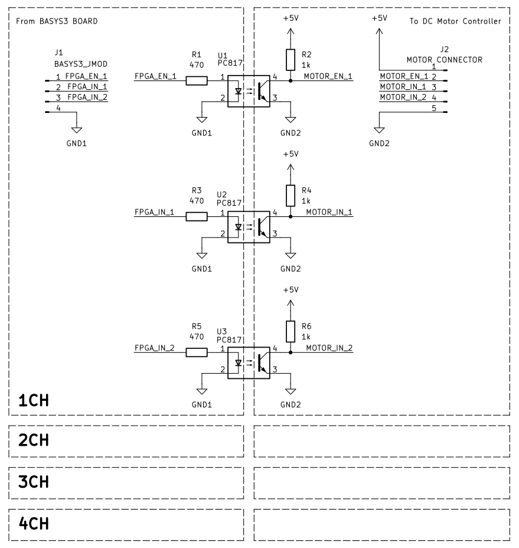

낮 / 밝음
배기 · 역회전 · IN1=0, IN2=1
RTL 주변기기 회로설계 · 16
기존 UART Register Map에 CTRL[3] 모터 Enable을 추가합니다.
CdS는 낮/밤에 따른 회전 방향을 결정하고, HC-SR04 거리값은 PWM Duty를 결정합니다.
10cm 이하는 안전 정지, DIST_LIMIT_CM 이상 또는 물체 없음은 최고 속도로 동작합니다.
배기 · 역회전 · IN1=0, IN2=1
흡기 · 정회전 · IN1=1, IN2=0
10cm 이하 정지, 이후 거리 비례 속도, 기준거리 이상 최고속도
PC / moserial
→ UART 수신
→ Register 저장
→ CdS 낮/밤 판단
→ 초음파 거리 판단
→ l298_distance_motor_controller
→ motor_ena_pwm
→ motor_in1 / motor_in2
→ L298 Driver
→ DC Motor| 기능 | 처리 |
|---|---|
| UART Register Map | 기존 유지 |
| LED PWM / LED Bar | 기존 유지 |
| CdS | 기존 유지 · 모터 방향 판단에 사용 |
| HC-SR04 | no_object 상태 출력 추가 |
| XADC | 누적 사이트 Chapter 15 기능 유지 |
| L298 Motor | 신규 Controller + Top 출력 3개 추가 |
| Address / Bit | 기능 | 이번 단계 |
|---|---|---|
0x00 / CTRL[0] | LED PWM Enable | 유지 |
0x00 / CTRL[1] | CdS Enable | 모터 방향 조건 |
0x00 / CTRL[2] | 초음파 Enable | 거리 측정 조건 |
0x00 / CTRL[3] | L298 Motor Enable | 추가 |
0x02 | DIST_LIMIT_CM | 최고 속도 도달 거리 |
| UART HEX | 의미 |
|---|---|
010000 | 전체 OFF |
010264 | DIST_LIMIT_CM=100cm |
010004 | 초음파만 ON |
01000E | CdS + 초음파 + 모터 ON |
01000F | LED + CdS + 초음파 + 모터 ON |
CTRL[6] XADC와 Chapter 13의 CTRL[7] 거리 기반 LED Bar 기능도 그대로 유지합니다.
| CdS 상태 | cds_is_light | 의미 | 모터 | IN1 | IN2 |
|---|---|---|---|---|---|
| 낮 / 밝음 | 1 | 환기 | 배기 · 역회전 | 0 | 1 |
| 밤 / 어두움 | 0 | 외기 유입 | 흡기 · 정회전 | 1 | 0 |
if (motor_duty == 8'h00) begin
motor_in1 = 1'b0;
motor_in2 = 1'b0;
end
else if (cds_is_light) begin
motor_in1 = 1'b0;
motor_in2 = 1'b1;
end
else begin
motor_in1 = 1'b1;
motor_in2 = 1'b0;
end| 거리 상태 | 동작 |
|---|---|
| 측정 전 | 정지 |
| 0~10cm | 안전 정지 |
| 10cm 초과 ~ DIST_LIMIT_CM 미만 | 거리 비례 속도 |
| DIST_LIMIT_CM 이상 | 최고 속도 |
| 물체 없음 | 최고 속도 |
effective_distance_cm =
distance_cm - STOP_DISTANCE_CM;
duty_calc =
(effective_distance_cm * 8'd255) /
speed_range_cm;DIST_LIMIT_CM=100cm, 정지 기준 10cm라면 속도 계산 범위는 90cm입니다.
기존 timeout_error는 1Clock Pulse이므로 지속적인 모터 제어 상태로 사용하기 어렵습니다.
따라서 초음파 거리계에 no_object 상태 출력을 추가합니다.
| 신호 | 의미 |
|---|---|
distance_valid=1 | 정상 거리값 유효 |
no_object=1 | Echo Timeout · 물체 없음 |
distance_valid=0, no_object=0 | 측정 전 또는 측정 중 |
// 정상 측정
distance_valid <= 1'b1;
no_object <= 1'b0;
// Echo Timeout
distance_valid <= 1'b0;
no_object <= 1'b1;
timeout_error <= 1'b1;assign motor_base_enable =
motor_en &&
dist_en &&
cds_en;if (!motor_base_enable)
motor_duty = 8'h00;
else if (no_object)
motor_duty = 8'hFF;
else if (!distance_valid)
motor_duty = 8'h00;
else if (distance_cm <= 10)
motor_duty = 8'h00;
else if (distance_cm >= max_speed_cm_safe)
motor_duty = 8'hFF;
else
motor_duty = 거리 비례 계산값;DIST_LIMIT_CM이 10cm 이하로 잘못 설정되면 기본값 100cm를 사용하도록 보호 로직을 둡니다.

| 기능 | Top 포트 | L298 | PMOD | FPGA Pin |
|---|---|---|---|---|
| 속도 PWM | motor_ena_pwm | ENA | JB1 | A14 |
| 방향 1 | motor_in1 | IN1 | JB2 | A16 |
| 방향 2 | motor_in2 | IN2 | JB3 | B15 |
set_property -dict { PACKAGE_PIN A14 IOSTANDARD LVCMOS33 } [get_ports {motor_ena_pwm}]
set_property -dict { PACKAGE_PIN A16 IOSTANDARD LVCMOS33 } [get_ports {motor_in1}]
set_property -dict { PACKAGE_PIN B15 IOSTANDARD LVCMOS33 } [get_ports {motor_in2}]GND1과
Motor 측 GND2를 완전히 분리한다고 설명합니다.
그러나 같은 참고자료 뒤쪽에는 “Basys3 GND와 L298 GND를 반드시 공통 연결”하라는 문장도 있습니다.
두 방식은 동시에 적용할 수 없습니다.
제공된 PC817 절연 회로를 사용한다면 GND1과 GND2를 연결하지 않는 구조가 회로도와 일치합니다.
공통 GND는 포토커플러를 쓰지 않는 직접 연결 방식에서 필요한 조건으로 구분해야 합니다.
motor_ena_pwm / motor_in1 / motor_in2를
L298 입력의 논리값과 같은 극성으로 검증합니다.
따라서 실제 보드 제작 전에는 PC817 이후 신호 극성 또는 추가 반전 단계를 반드시 확인해야 합니다.
이번 자료에서는 원본 RTL을 임의 수정하지 않고 이 불일치를 검증 메모로 남깁니다.
| 조건 | 기대 결과 |
|---|---|
| Reset / Enable 조건 부족 | 정지 |
distance_valid=0, no_object=0 | 정지 |
| 5cm / 10cm | 안전 정지 |
| 낮 + 20cm | 역회전 · 저속 PWM |
| 밤 + 50cm | 정회전 · 중속 PWM |
| 낮 + 100cm | 역회전 · 최고 속도 |
| 밤 + 물체 없음 | 정회전 · 최고 속도 |
| 낮 + 물체 없음 | 역회전 · 최고 속도 |
PASS: l298_distance_motor_controller test completed.CTRL[7:6] reserved 표기는 이전 누적 기능과 충돌하므로 그대로 덮어쓰지 않았습니다.
CTRL[3]은 L298 Motor Enable입니다.DIST_LIMIT_CM까지 거리 비례 PWM을 적용합니다.DIST_LIMIT_CM 이상 또는 no_object=1이면 최고 속도입니다.no_object를 추가합니다.